Lesson 6 · Part 1 · The harness · 5 questions
An agent is a while loop
Read first: Tokens and the context window
A model can only write text. An agent is that model inside an ordinary program, a while loop, that runs the tools the model asks for and feeds the results back until the model says it is done. Once you see the loop, "agents", "harnesses" and "agent factories" stop being mysterious.
The idea
Picture a senior engineer on a phone call, helping a junior who sits at the keyboard. The senior can't touch the machine. They say "run the tests", the junior runs them and reads out the output, the senior says "open orders.py, line 40", and so on, until the senior says "done, that's the fix". The senior does all the thinking. The junior does all the doing.
The model is the senior. The program around it, called the harness, is the junior. Claude Code, Codex CLI and the script you might write tonight are all harnesses around a model. Each step goes like this:
- Ask. The harness sends the model the task, the list of tools it may use, and everything that has happened so far.
- Decide. The model replies with text, or with a tool call: a small structured request such as "run the command
pytest -x". Writing that request is all the model does. - Act. The harness, ordinary code on your machine, checks the request and runs it.
- Feed back. The harness adds the output to the conversation as a tool result and goes back to step 1.
- Stop. When the model replies with text and no tool call, the loop ends. That text is the agent's final answer.

Notice who does what. The model sits in a data centre and never touches your laptop. Everything that happens to your files, your shell and your network is done by the harness. That is why permissions, sandboxes and approval prompts all live in the harness, not in the model.
Up close
Here is a complete, working agent with one tool, a shell, using Anthropic's Python SDK. First the tool description the model will see:
import subprocess
import anthropic
client = anthropic.Anthropic()
SHELL = {
"name": "shell",
"description": (
"Run a shell command and"
" return its output"),
"input_schema": {
"type": "object",
"properties": {
"cmd": {"type": "string"},
},
"required": ["cmd"],
},
}
def run(cmd):
p = subprocess.run(
cmd, shell=True, text=True,
capture_output=True)
return p.stdout + p.stderrAnd the agent itself, the whole loop:
msgs = [{"role": "user",
"content": TASK}]
while True:
r = client.messages.create(
model=MODEL, max_tokens=16000,
tools=[SHELL], messages=msgs)
msgs.append({"role": "assistant",
"content": r.content})
if r.stop_reason != "tool_use":
break # text only: done
results = []
for b in r.content:
if b.type == "tool_use":
out = run(b.input["cmd"])
results.append({
"type": "tool_result",
"tool_use_id": b.id,
"content": out,
})
msgs.append({"role": "user",
"content": results})
for b in r.content:
if b.type == "text":
print(b.text)Three details carry the whole mechanism:
stop_reasonsays why the model stopped writing.tool_usemeans "I'm asking for a tool, run it and come back".end_turnmeans "I'm finished". There are a few others, such asmax_tokens(the reply hit its length limit), and a real harness handles each one. This toy treats them all as "done".- A
tool_useblock has anid, the tool'snameand aninputobject that follows the tool's schema. The model wrote that JSON. Nothing has run yet. - A
tool_resultblock goes back in ausermessage, with the same id, so the model knows which call it answers. To the model, the result is just more text in its context.
And notice msgs: it only grows. Every pass sends the whole list again, which is why long sessions get expensive (Tokens and the context window) and why prompt caching matters so much for agents.
A production harness is this same loop with a lot of care added: a dozen well-described tools, permission checks before each one, limits on turns and spend, output trimming, summarising old history when the window fills up, and a terminal UI. Anthropic's Agent SDK docs describe Claude Code's core in exactly these terms: the model calls tools, gets the results, and repeats until it produces a response with no tool calls. Codex CLI is open source (Apache-2.0), so you can read its loop yourself.
One honest exception: some APIs offer server tools, such as web search, that the provider runs on its own machines. It is the same loop, just with the "act" step in someone else's data centre.
Worked example
You give the agent above the task "the test test_refund fails, fix it". A typical run:
| Pass | Model replies | Harness does |
|---|---|---|
| 1 | tool call: pytest -x | runs it, returns 1 failure |
| 2 | tool call: sed -n 30,60p refunds.py | returns 31 lines |
| 3 | tool call: a sed -i edit | edits the file |
| 4 | tool call: pytest -x | runs it, all pass |
| 5 | text: "Fixed: the refund used the wrong currency" | loop ends |
Five model calls, four commands, one final answer. Pass 5 sent everything from passes 1–4 again. The "agent" decided which commands to run; your laptop ran them.
Your turn
Question 1 · ~2 min
Your coding agent runs rm -rf build/ to clean up before a rebuild. Who actually deleted the folder: the model or the harness?
Show answer
The harness. The model only wrote a request: a tool_use block saying "run rm -rf build/". The harness, a program on your laptop running as your user, decided to run it and did. So the harness is where you stop dangerous commands: permission prompts, allow and deny lists, sandboxes. A line in the prompt saying "never delete things" is only a request to the model.
Question 2 · ~2 min
Halfway through a task, the agent writes "Next, I'll run the integration tests and fix any failures." Then nothing happens. It just waits for you. Why?
Show answer
It replied with text, not a tool call. To the loop, a reply with no tool call means "done" (stop_reason is end_turn), so it exits and hands control back to you. Describing an action is not taking one. Type "go ahead" and the loop starts again. Harnesses can also add a check that runs when the agent tries to stop, such as "are the tests green?", and send it back to work if not (see Hooks and permissions).
Question 3 · ~2 min
The agent runs a migration script and it crashes with a stack trace. The agent reads the trace, fixes a typo and runs it again. What part of the loop made that "self-correction" possible?
Show answer
The error went back as an ordinary tool result. The harness doesn't stop on a failing command. It returns the output, stack trace and all, as text in the next request. The model reads it like any other result and picks the next action. Nothing special happens: a failed command is just more context. That is also why clear, short error messages help agents as much as they help people.
Question 4 · ~3 min
Early in a session, each step costs a fraction of a cent. Forty steps later, a step that only runs ls costs many times more. The command didn't change. What did?
Show answer
The history it sends. Every pass of the loop sends the whole conversation again: every file read, every test run, every log. By step 40 that can be tens of thousands of tokens, even if the new part is one short command. Caching makes the repeated part cheaper but not free. Keep tool outputs small, and start a fresh session for a new task.
Question 5 · ~3 min
Stretch: a vendor demos an "agent factory" that works through 50 tickets overnight and opens 50 pull requests. Without seeing their code, what is most likely underneath?
Hint
Show answer
An ordinary script that starts the same loop 50 times. Something (a cron job, a CI pipeline, or another agent) reads the ticket list and launches a harness per ticket, each with its own prompt and its own copy of the code (a git worktree or a container), so they don't trample each other. The interesting questions are not "what's the AI?" but: which loop runs, who starts it, what tools and permissions does each run get, and how is its work checked before merge?
Interesting fact: The loop is older than tool calls
In October 2022, about two months before ChatGPT launched, Shunyu Yao of Princeton and colleagues at Google Research posted a paper called ReAct, short for "reasoning and acting". They prompted a large model with a few hand-written examples in a fixed format: Thought, Action, Observation, repeated. For question answering the model had three actions on Wikipedia: search[entity], lookup[string] (like Ctrl+F) and finish[answer]. Ordinary code ran each action and pasted the result back as the next Observation. That is the loop in this lesson, built months before model APIs had a tool-call feature at all (OpenAI added function calling in June 2023). On two interactive benchmarks, ReAct beat imitation and reinforcement learning methods by 34 and 10 percentage points of success rate, with only one or two examples in the prompt.
Facts checked: November 2026 (Anthropic API docs: tool use and stop reasons; Claude Agent SDK docs; Codex CLI repository; Yao et al., ICLR 2023; OpenAI, June 2023).
Answers
- Question 1
The harness. The model only wrote a request: a
tool_useblock saying "runrm -rf build/". The harness, a program on your laptop running as your user, decided to run it and did. So the harness is where you stop dangerous commands: permission prompts, allow and deny lists, sandboxes. A line in the prompt saying "never delete things" is only a request to the model. - Question 2
It replied with text, not a tool call. To the loop, a reply with no tool call means "done" (
stop_reasonisend_turn), so it exits and hands control back to you. Describing an action is not taking one. Type "go ahead" and the loop starts again. Harnesses can also add a check that runs when the agent tries to stop, such as "are the tests green?", and send it back to work if not (see Hooks and permissions). - Question 3
The error went back as an ordinary tool result. The harness doesn't stop on a failing command. It returns the output, stack trace and all, as text in the next request. The model reads it like any other result and picks the next action. Nothing special happens: a failed command is just more context. That is also why clear, short error messages help agents as much as they help people.
- Question 4
The history it sends. Every pass of the loop sends the whole conversation again: every file read, every test run, every log. By step 40 that can be tens of thousands of tokens, even if the new part is one short command. Caching makes the repeated part cheaper but not free. Keep tool outputs small, and start a fresh session for a new task.
- Question 5
An ordinary script that starts the same loop 50 times. Something (a cron job, a CI pipeline, or another agent) reads the ticket list and launches a harness per ticket, each with its own prompt and its own copy of the code (a git worktree or a container), so they don't trample each other. The interesting questions are not "what's the AI?" but: which loop runs, who starts it, what tools and permissions does each run get, and how is its work checked before merge?